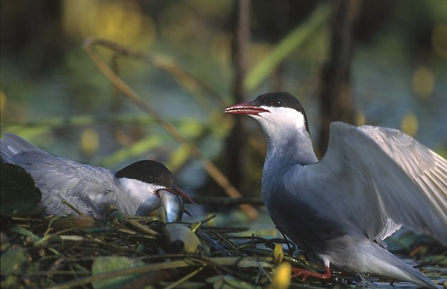

व्हिस्कर्ड टर्नWhiskered Tern
Chlidonias hybrida · Laridae · BRD-0246

- Scientific name वैज्ञानिक नाम
- Chlidonias hybrida (Pallas, 1811)
- Family कुल
- Laridae
- Hindi हिंदी
- व्हिस्कर्ड टर्न
- Local names स्थानीय नाम
- whiskered tern, tern
- Status here यहाँ की स्थिति
- native
- Movement आवागमन
- Winter visitor
- Known from कहाँ दर्ज
- Others have published records from the Basti–Ayodhya districts बस्ती–अयोध्या के ज़िलों से दूसरों के प्रकाशित अभिलेख
- IUCN IUCN
- LC
- Review समीक्षा
- audited and independently read
When to look कब देखें
Winter visitor शीतकालीन प्रवासी. Expected mainly in September, October, November, December, January, February, March, April, May, June. मुख्यतः सितंबर, अक्टूबर, नवंबर, दिसंबर, जनवरी, फ़रवरी, मार्च, अप्रैल, मई, जून में अपेक्षित।
Arrives in September–October from breeding grounds in central Asia and the Mediterranean; departs by May–June. Ali & Ripley (1968) document arrival and departure timing across India. All migrants and visitors →
Uses and possibilities उपयोग और संभावनाएँ
Drawn from the documented uses in the profile below, where each is labelled traditional, current or a research lead. All uses →
Tell it apart from इनसे अलग पहचानें
व्हिस्कर्ड टर्न / Whiskered Tern
Chlidonias hybrida (Pallas, 1811) — Laridae
व्हिस्कर्ड टर्न — यह सर्दियों में मध्य एशिया से आने वाली एक छोटी, तेज़ उड़ने वाली चिड़िया है जो पूर्वी उत्तर प्रदेश के तालाबों और नदियों के पास सितंबर से जून तक दिखती है। इसकी छोटी, नुकीली चोंच और तेज़ उड़ान मच्छर-भक्षी हवाई शिकारी के लिए परफेक्ट है। काली टोपी और मूंछ जैसी काली पट्टी इसे आसानी से पहचान देती है।
Quick Identification त्वरित पहचान
| Feature | Description |
|---|---|
| Size | Small tern; 23–25 cm long |
| Cap | Black cap on crown; distinctive white cheeks |
| Moustache | Black stripe from eye extending to ear-coverts (distinctive) |
| Back | Grey; pale in winter |
| Underparts | White to pale grey |
| Wings | Pointed, grey; efficient for aerial feeding |
| Tail | Forked, typical of terns |
| Behaviour | Aerial feeder; hovers above water before plunging |
| Call | Sharp, harsh calls while hunting |
Field tip: Over open water in marshes and lakes, look for a small grey and white tern with a distinctive black cap and black "moustache" stripe. The bird hovers low over water searching for small insects, occasionally dipping to pick items from the water surface. Often in flocks, especially outside breeding season.
हिंदी — कैसे पहचानें:
छोटी, हल्की सी टर्न।
काली टोपी और काली मूंछ जैसी लकीर।
पानी के ऊपर तेज़ी से उड़ता है।
मच्छरों का शिकार करता है।
Morphology आकारिकी
Biometrics:
| Measurement | Range |
|---|---|
| Total length | 230–250 mm |
| Wing (flattened chord) | 172–190 mm |
| Tail | 85–105 mm |
| Bill | 26–30 mm |
| Tarsus | 13–15 mm |
| Weight | 45–65 g |
Size: 23–25 cm long; wingspan 50–60 cm. Weight 45–65 g. A small, lightly-built tern.
Breeding plumage (visible in UP during winter): Crown and face glossy black, with distinctive white cheeks and white lores. Black "moustache" stripe extending from corner of bill through eye to ear-coverts (whence the name). Back pale grey. Rump and upper tail-coverts pale grey. Underparts white, with pale grey wash on breast. Wings pointed, pale grey above. Outer primaries slightly darker. Tail forked, pale grey.
Non-breeding plumage (if present): Cap becomes patchy; moustache stripe less prominent; overall paler.
Bill: Small, pointed, dark, adapted for plucking small insects from water.
Legs and feet: Very short, orange-red, not adapted for walking.
Eyes: Dark.
Sexual dimorphism: Minimal; females slightly smaller.
Juveniles: Brownish above; cap less developed; dusky lores and ear-coverts.
Vocalisations. Call repertoire:
- Alarm and contact call: Sharp, harsh kik-kik-kik or cherr-cherr, given while hunting or flying; frequency around.
- Song: Series of sharp chirps and whistles, delivered in aerial displays; less structured than related species.
हिंदी: तेज़, कठोर "किक-किक" आवाज़। शिकार करते समय बोलता है।
Behaviour & Ecology व्यवहार और पारिस्थितिकी
Insectivorous aerial feeder: Whiskered Terns feed almost exclusively on small insects taken from the water surface or caught in flight:
- Mosquitoes and midges
- Small flying insects (gnats, flies)
- Small aquatic insects (floating pupae)
- Occasional small fish fry (when abundant)
Feeding behaviour: Characteristic tern-like hunting; hovers low over water (5–20 cm altitude) searching for prey, then dips to pick insects from water surface or occasionally plunges from height. Much less diving than some terns; primarily dipping and aerial gleaning. Very agile, fast fliers.
Social behaviour: Gregarious; winter visitors often form flocks of 20–100 or more birds. May associate with other tern species (Black-bellied Tern).
Habitat dependence: Requires open water for feeding; avoids heavily vegetated or closed wetlands.
Predators: Large gulls, raptors (sparrowhawks, falcons) may prey on terns; crows may harass flocks.
हिंदी: झुंड में उड़ता है। पानी के ऊपर मच्छर पकड़ता है। बहुत तेज़ उड़ता है।
Life Cycle / Phenology जीवन चक्र
Winter visitor: Absent during breeding season (April–August); returns to eastern UP from September and remains through June.
Arrival and departure: First flocks arrive in mid-September; numbers peak in November–January; departure begins in May, with most birds gone by June.
Breeding: Occurs in breeding grounds (central Asia, Mediterranean) during April–August. Does not breed in India.
Moult: Post-breeding moult occurs on breeding grounds; birds arrive in non-breeding or partial breeding plumage.
Roosts: Nocturnal roosts on open water or sandbanks; gather in flocks at dusk.
हिंदी: सितंबर में आता है, जून तक रहता है। अपने देश में ही अंडे देता है। पानी पर रात बिताता है।
Host Plants or Prey आहार
| Prey Type | Examples | Feeding Behaviour |
|---|---|---|
| Small flying insects | Mosquitoes, midges, small flies | Hover and dip from water surface |
| Aquatic pupae | Chironomid pupae | Dip and pick from surface |
| Flying insects | Gnats, small insects in flight | Aerial hawking |
| Small fish fry | When abundant in shallow water | Plunge and pick |
हिंदी: मच्छर और छोटे कीड़े खाता है। पानी की ऊपरी सतह से चुनकर खाना निकालता है।
Predators / Natural Enemies शत्रु
- Avian predators: Black Kite, sparrowhawks, Peregrine Falcon (rare)
- Competitors: Large gulls may harass and displace from feeding areas
- Parasites: Avian ectoparasites; intestinal helminths
हिंदी: बड़ी चिड़ियाँ इसका शिकार करती हैं। गुलल इसे खदेड़ते हैं।
Agricultural / Human Relevance कृषि प्रासंगिकता
Pest control: Highly beneficial; feeds on mosquitoes and other disease-vector insects. A flock of Whiskered Terns can consume thousands of insects daily, reducing mosquito populations significantly.
Protected status: Protected under the Wildlife (Protection) Act 1972. Hunting and trade are prohibited.
Ecological health indicator: Presence indicates adequate open-water habitats and healthy invertebrate populations.
हिंदी: यह विधि अधिनियम 1972 के अंतर्गत संरक्षित है। मच्छरों को खूब नियंत्रित करता है।
Expected Locally स्थानीय रूप से अपेक्षित
Not a field record. Written from published accounts for eastern Uttar Pradesh. No confirmed local sighting yet — if you have seen it, that is what the atlas needs.
अभी तक स्थानीय पुष्टि नहीं। यह विवरण प्रकाशित स्रोतों से है, किसी अवलोकन से नहीं।
This species is NOT a field record. The distribution below is based on published sources describing where Whiskered Terns should be looked for in the Basti–Ayodhya region.
Winter range: Expected in eastern Uttar Pradesh from September to June. Open-water habitats including large ponds, reservoirs, floodplain lakes, and river channels are preferred.
Habitat preference: Large, open water bodies with minimal emergent vegetation; lakes and marshes suitable for aerial feeding.
Peak occurrence: November–February, when visiting populations are present.
GBIF records: GBIF holds published records from these districts in the core region.
What a first record would be: A dated photograph showing the bird clearly in a specific location (with GPS coordinates and date) submitted through the About page of this atlas.
हिंदी: यह पक्षी स्थानीय रूप से अपेक्षित है, न कि देखे गए बतौर प्रेक्षण। सितंबर से जून तक बड़े तालाबों और नदी के पास दिखता है। पहला रिकॉर्ड के लिए स्पष्ट फोटोग्राफ और तारीख चाहिए।
Distribution वितरण
Global range: Widespread across Eurasia as a breeder (central Asia to Mediterranean) and non-breeder in Africa and southern Asia.
In India: Distributed throughout India as a winter visitor (September–June) in suitable wetlands.
In Uttar Pradesh: Widespread winter visitor in lakes, marshes, and river channels throughout the state.
In Basti district / eastern UP: Regular winter visitor in large open-water habitats; present September to June with peak numbers November–February.
Research Questions शोध प्रश्न
- What are the precise breeding grounds and migration routes of populations wintering in eastern UP?
- How does daily foraging activity and dietary composition vary with season and water conditions during the winter stay?
- What is the role of Whiskered Terns in regulating mosquito populations in winter wetlands?
- क्या जलाशयों के पानी के स्तर में बदलाव से इस टर्न की संख्या प्रभावित होती है?
- How do Whiskered Terns select foraging sites within wetlands, and what factors determine flock size? (A child can observe and map where flocks gather.)
- क्या सर्दियों में कीटनाशकों के छिड़काव से इस टर्न की खाने की चीज़ों की संख्या में कमी आती है?
Similar Species मिलती-जुलती प्रजातियाँ
| Species | Key Difference | Hindi | Field Rule | |
|---|---|---|---|---|
| [[black_bellied_tern\ | Black-bellied Tern]] (Chlidonias leucopterus) | Slightly larger; darker; black belly in breeding plumage | काली पेट की टर्न | Black-bellied Tern lacks the distinctive moustache stripe and is darker overall. |
| Common Tern (Sterna hirundo) | Larger (33–35 cm); orange-red bill; different hunting style | सफेद टर्न | Common Tern is larger and lacks the distinctive facial pattern. |
Field rule: Whiskered Tern is distinguished by its small size, distinctive black cap with white cheeks, and especially the black moustache stripe extending from the bill. It hovers and dips for insects; diving terns plunge from greater heights. The pale grey back and forked tail are also distinctive.
Taxonomy & Classification वर्गीकरण
Original description. The species was described by Peter Simon Pallas in 1811 as Sterna hybrida. Later placed in the genus Chlidonias. Type locality is the Caspian Sea region.
Subspecies. Two subspecies are recognized: C. h. hybrida (Pallas, 1811) occurs in Europe and western Asia, and C. h. delalandii (Stephens, 1826) in southern Africa. The subspecies wintering in India is C. h. hybrida.
Family and order placement. Order Charadriiformes; family Laridae (gulls, terns, noddies). The genus Chlidonias contains marsh terns adapted for feeding on insects from water surfaces.
Phylogenetic notes. Whiskered Terns are closely related to Black-bellied and White-winged Terns within the genus Chlidonias. Molecular studies confirm they form a distinct clade within Laridae.
IUCN status rationale. The species is assessed as Least Concern (LC). Populations are stable and widely distributed. The species is adaptable to human-modified wetlands and is not threatened by hunting in most of its range.
हिंदी: यह प्रजाति विश्वभर में काफी संख्या में है। भारत में सर्दियों में आती है। आमतौर पर सुरक्षित है।
Photo Gallery फोटो गैलरी
No photos yet — add field photos to media/species/whiskered_tern/ and run node scripts/sync_photos.js.
Wanted photos:
- Winter plumage with distinctive facial pattern
- Hovering over water while feeding
- Flock in flight
- Dipping to pick insect from water
- Close-up of head showing moustache stripe
References संदर्भ
- Pallas, P. S. (1811). Zoographia Rosso-Asiatica, Vol. 2. Caes. Acad. Scientiarum, St. Petersburg.
- Ali, S. & Ripley, S. D. (1968). Handbook of the Birds of India and Pakistan. Vol. 2 (Warblers to Whydahs). Oxford University Press, Delhi. Pp. 288–291.
- Cramp, S. & Simmons, K. E. L. (1983). Handbook of the Birds of Europe, the Middle East and North Africa: The Birds of the Western Palearctic. Vol. 3 (Warblers to Finches). Oxford University Press. Pp. 440–449.
- Rasmussen, P. C. & Anderton, J. C. (2005). Birds of South Asia: The Ripley Guide. Vol. 2. Smithsonian Institution Press, Washington, DC. Pp. 122–123.
- GBIF Occurrence Data — Chlidonias hybrida, India.
- IUCN Red List (2023). Chlidonias hybrida — BirdLife International assessment. IUCN, Cambridge. Status: Least Concern.
Source file: species/fauna/birds/whiskered_tern.md